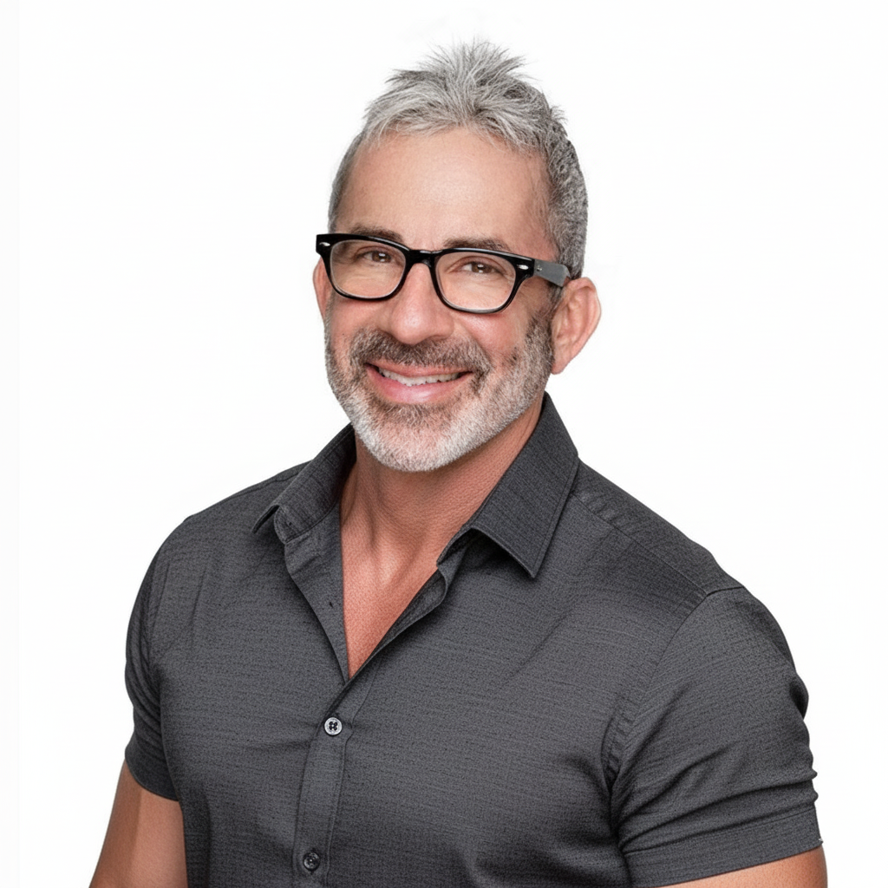

A grounded perspective on timing, transition, and direction — formed over decades of observing how people navigate change.

They arrive as discomfort, restlessness, or a quiet sense that something is shifting — even when everything on the surface appears fine.
Robert Schantz has spent nearly four decades working in sales, management, and personal development — and nearly two decades as a coach. That work made one pattern undeniable: most of what keeps people stuck isn't a lack of effort. It's a mismatch between what they're trying to do and what the current phase of their life is actually designed for.
Human Behavior Specialists was founded in January 2022 to bring that understanding into a dedicated practice — helping people navigate transitions with orientation, not pressure.
"People don't struggle because they are broken — they struggle because they are out of rhythm with their current phase."
When timing is misunderstood, even good decisions feel heavy. When timing is understood, direction becomes steadier and more sustainable.
Human Behavior Specialists exists to provide that context.
This work is informed by decades of observing human behavior — in business, leadership, relationships, and periods of transition.
Over time, patterns emerged. People in the same kinds of situations — career plateaus, relationship crossroads, identity shifts — were navigating challenges that weren't about effort or intelligence. They were about timing.
The Pythagorean-based numerological framework that forms the foundation of this work provided a structural map for those patterns — a way to see cycles, name phases, and understand what a particular period of life is actually designed for.
That map, combined with direct advisory experience, is what each session draws from.
My role is not to motivate or persuade. It is to listen carefully, observe patterns, and reflect back what is already present but often unseen.
The pace of sessions reflects the work itself — unhurried, focused, and designed to allow insight to emerge naturally.
You are not told what to do. You are given context — and the decision remains entirely yours.
Each session follows a clear framework, even as the conversation allows for what's most relevant to surface.
Pattern-based methodology provides the structure. Lived experience with human transitions provides the depth.
Some phases are meant for building. Others for consolidating, refining, or letting go. Difficulty often arises when we try to force a phase that has already passed — or rush one that hasn't yet arrived.
This work helps people recognize the phase they are in, understand what is naturally completing, identify what is beginning to take shape, and make decisions that align with timing rather than pressure.
The goal is not certainty. The goal is orientation.
Credentials are offered as context, not as the primary basis of trust. The work earns trust through what becomes clear — not through what's listed on a wall.
B.S. in Business Finance, California State University, Chico — numbers and quantitative thinking have always been central to how Robert sees the world
Licensed Managing Broker specializing in Real Estate Finance and Sales — a career built on the numbers behind major life and financial decisions
Business development, sales, and management coaching practice since 2007 — working with executives, entrepreneurs, and professionals navigating growth and transition
Applied behavioral frameworks including DiSC, Enneagram, NLP, and Positive Intelligence across individual and organizational engagements
Trained in Pythagorean-based numerological pattern methodology under several of the field's leading practitioners
Human Behavior Specialists founded January 2022 to bring pattern-based timing intelligence to life transition advisory
This work is advisory and educational in nature. It draws on a multidisciplinary foundation that includes behavioral observation, coaching methodologies, and pattern-recognition frameworks.
It does not constitute therapy, medical advice, legal counsel, or financial guidance. Decisions remain entirely the responsibility of the individual. This work is a tool for understanding timing, direction, and alignment — so decisions are made with greater awareness.
The Personal Forecast Session is where most people begin — a single, complete conversation designed to provide orientation during a moment of transition.